多面体是由多边形构成面的几何体。我们通常所说的多面体是凸多面体。如果多面体在它每一个面所决定的平面的同侧，那么该多面体为凸多面体。
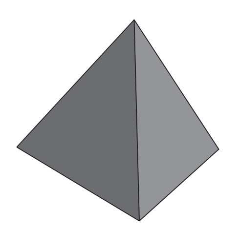
凸多面体
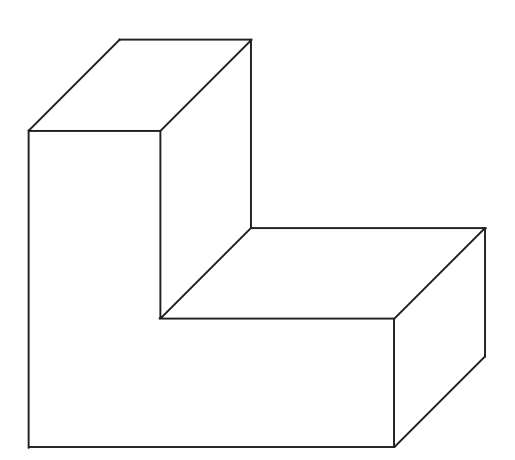
凹多面体（L形多面体的两部分不在同一个平面上）
如果一个凸多面体有F个面，E条边，V个顶点，那么三者的关系总是符合欧拉定理：
F+V=E+2
如果多面体的所有面都是相同的正多边形，每个顶点连接相同数量的边，那么它就是正多面体。即使第二个条件无法满足，我们仍然可以得到下面这个正多面体，有的顶点与三条边相连，有的与四条边相连：
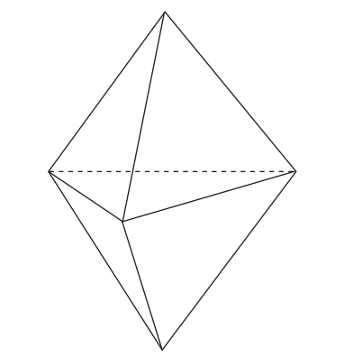
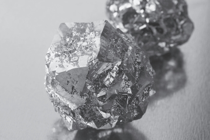
在意大利南部的大希腊地区经常会发现十二面体的黄铁矿晶体，正是由于对这种晶体的研究才让毕达哥拉斯学派成员对多面体十分感兴趣。
下面这条信息或许会让我们感到惊讶。尽管正多边形不计其数，可以由任意条边构成，但古希腊人早就知道正多面体只有五个，即所谓的柏拉图多面体。柏拉图多面体中有三个多面体的面是等边三角形：正四面体、正八面体、正二十面体。一个多面体的六个面都是正方形，我们称为立方体或正六面体。最后是由十二个正五边形组成的正十二面体。所有的柏拉图多面体都可以作外接球。
正四面体 Tetraedro
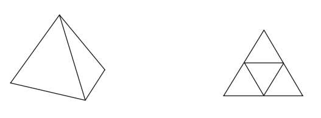
正六面体 Cubo
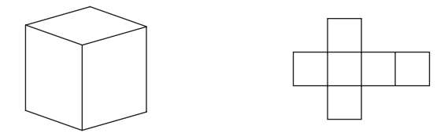
正八面体 Octaedro
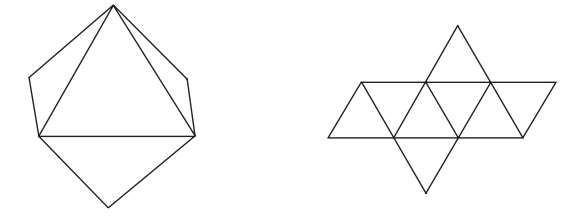
正十二面体 Dodecaedro
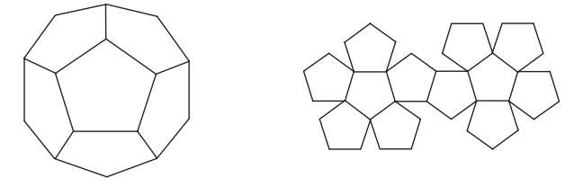
正二十面体 Icosaedro
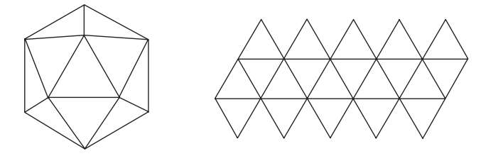
在希腊古典时代，每一个柏拉图多面体都对应着一种自然元素。正六面体代表土，正四面体代表火，正八面体代表气，正二十面体代表水，而正十二面体则象征着整个宇宙。正如柏拉图所说：“众神用它（正十二面体）编织了整个天空中的星座。”
古希腊人，特别是毕达哥拉斯学派，对于多面体的浓厚兴趣无疑来自对结晶矿物的研究，这些在地中海地区常见的结晶矿物就包括令人惊叹的黄铁矿晶体，这种晶体通常为正十二面体。
下表统计了五个柏拉图多面体的面、边、顶点的数量：
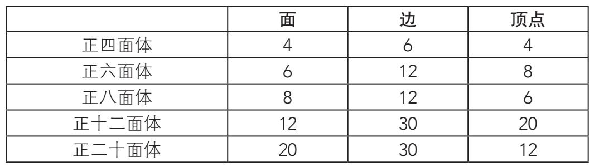
如果在正十二面体外接一个正多面体，把正十二面体的顶点作为该多面体每一面的中心点，最终会得到一个正二十面体：
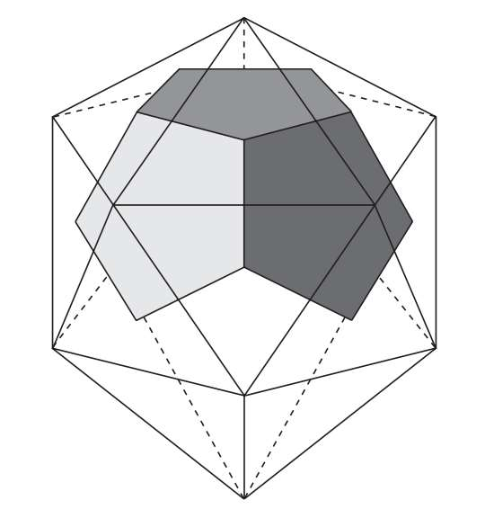
多面体容器
我们的冰箱里装满了各式各样的容器。比如利乐包（Tetra Pak）就是用来盛放牛奶或果汁的普通液体容器。这个商品名表示该容器的形状是四面体，而实际上现在常见的利乐包是一个两面为正方形的长方体或平行六面体。然而最初的利乐包是四面体。
制作四面体既简单又省时，因为人们只需要沿着它的两条棱粘贴就可以将其封装完成。但作为一种理想的容器，它后来会被取代主要是因为后勤存储的问题。存放四面体十分麻烦并且总是会产生多余的空间，而这些空间又放不下额外的四面体。
现在纸箱的形状也非常简单，普遍采用了两面为正方形的长方体。我们可以拆解一个纸箱来观察它的构造。利乐包使用两面为正方形的长方体有着巨大优势，因为它们可以高效存储，堆放在一起不会留出额外空间。
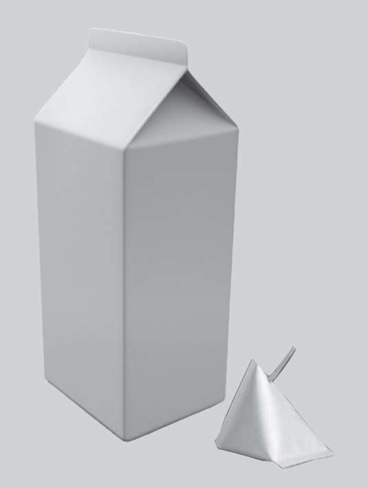
如果用正二十面体重复这一过程，就会得到一个正十二面体。人们根据这一性质把这两个多面体称为对偶多面体：
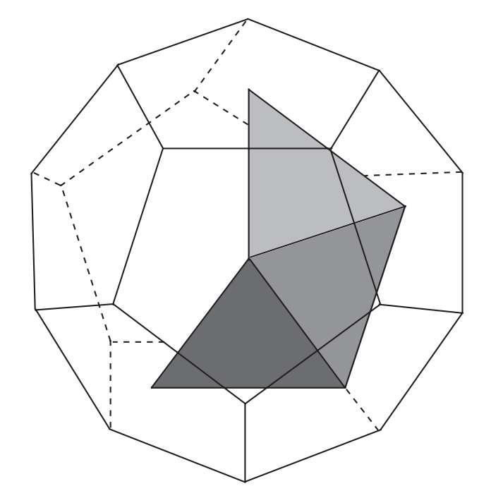
并不是所有多面体都与黄金比例有着相同的联系。与黄金比例关系密切的是正十二面体（没错，因为它由五边形构成）及其对偶多面体，正二十面体。在它们的体积和表面积（所有面的面积之和）公式中就有Φ的身影。设其棱长为1，那么：
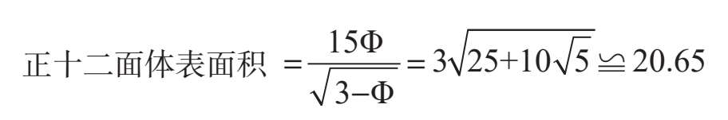
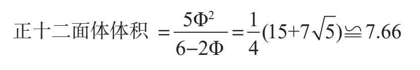
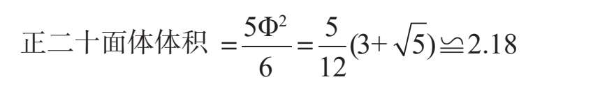
如果像对偶多面体那样用正二十面体和正十二面体互相嵌套，那么两个多面体的棱长之比为：
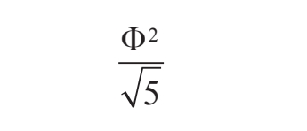
另一方面，正二十面体的十二个顶点可以分成三组，每组四个，它们构成了正二十面体内的三个黄金矩形，这三个黄金矩形互相垂直：
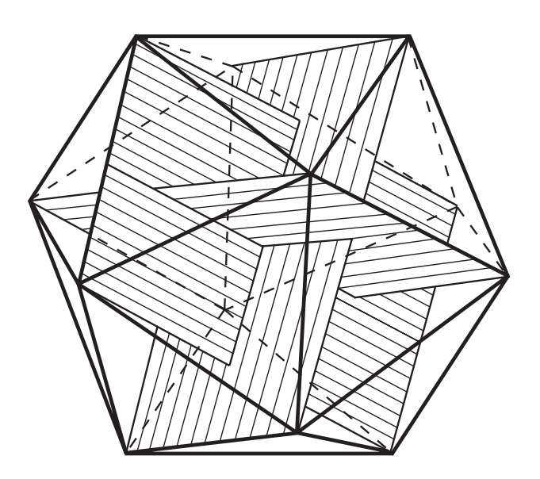
因此，如果我们让三个相同的黄金矩形相互垂直、中心点相交，那么凸出的十二个顶点将是正二十面体的顶点，黄金矩形的短边是正二十面体的棱。如果将三个黄金矩形共同的交点设为原点，那么正二十面体的十二个顶点坐标如下：
（0，±1，±Φ），（±1，±Φ，0），（±Φ，0，±1）